Check for Symmetrical Binary Tree
Problem Statement: Given a Binary Tree, determine whether the given tree is symmetric or not. A Binary Tree would be Symmetric, when its mirror image is exactly the same as the original tree. If we were to draw a vertical line through the centre of the tree, the nodes on the left and right side would be mirror images of each other.
Examples
Example 1: Input: Binary Tree: 1 2 2 3 4 4 3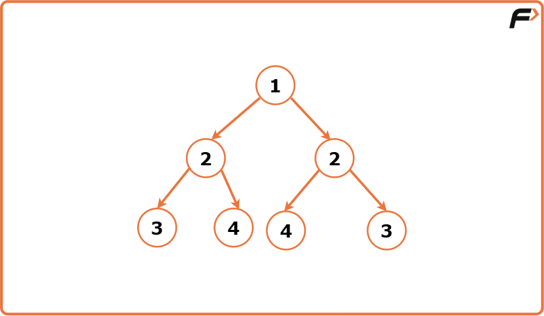
Output:True Explanation: If we were to draw a vertical line through the centre of the tree, dividing it into left and right parts, we observe that the nodes on the left and right sides are mirror images of each other.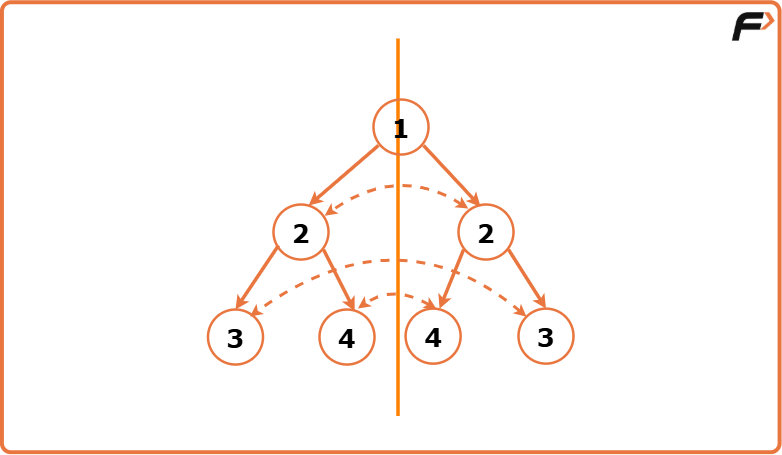
Example 2: Input:Binary Tree: 1 2 2 -1 3 -1 3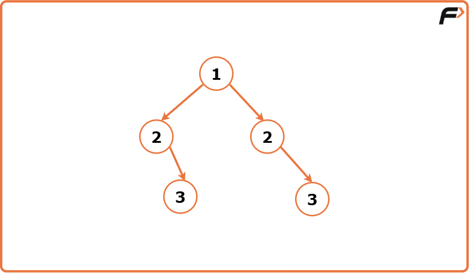
Output : False Explanation: While the tree has a symmetric structure at the first level with nodes 2 and 2, the subtrees under nodes 2 and 2 are not symmetric. If we were to draw a vertical line through the centre of the tree, dividing it into left and right parts, we observe that the nodes on the left and right sides are not mirror images of each other.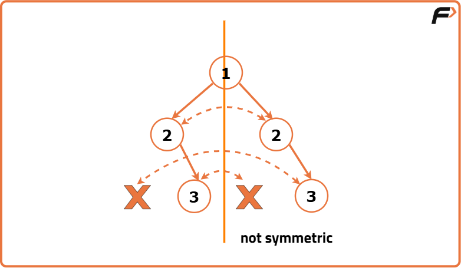
Disclaimer: Here is the practice link to help you assess your knowledge better. It's highly recommend trying to solve it before looking at the solution.
Approach
Algorithm
A binary tree is symmetric if its left and right sides are mirror images of each other. If a vertical line is drawn through the center, both sides should align perfectly.
Symmetry conditions:
- The tree must visually mirror itself from left to right.
- This mirror pattern must be consistent at every level of the tree.
We compare left and right parts in a mirrored way - left child of the left side is compared with the right child of the right side, and vice versa.
Base check: If both parts are empty, it is symmetric. If only one is empty, it's not.
Mirror checks:
- Both nodes should have the same value.
- Left of left side matches right of right side.
- Right of left side matches left of right side.
Final result: The tree is symmetric if all mirrored comparisons pass successfully from top to bottom.
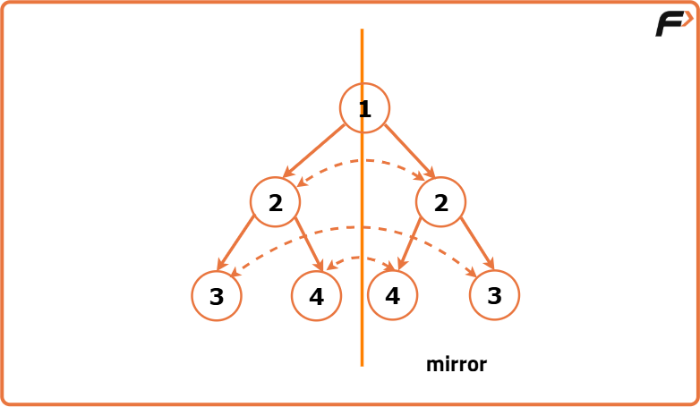
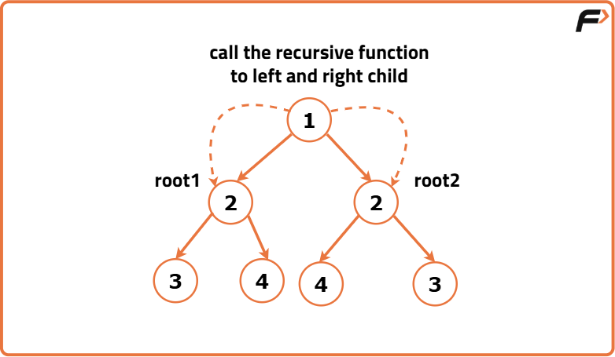
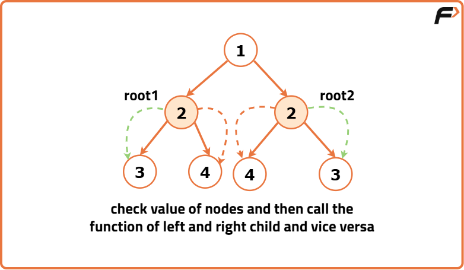
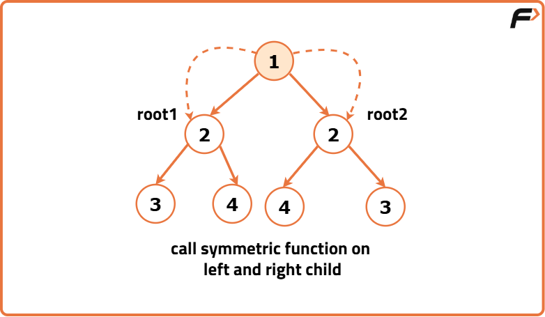
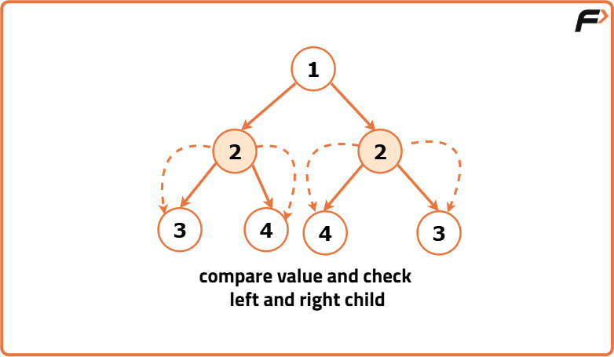
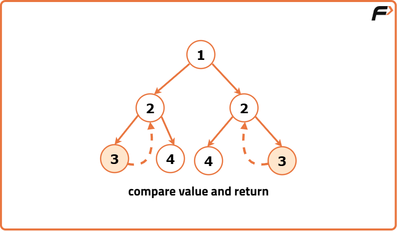
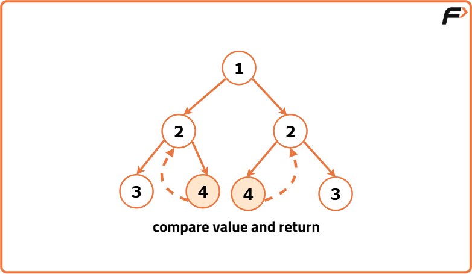
Code
#include <iostream>
using namespace std;
// Node structure for the binary tree
struct Node {
int data;
Node* left;
Node* right;
// Constructor to initialize
// the node with a value
Node(int val) : data(val), left(nullptr), right(nullptr) {}
};
class Solution {
private:
// Function to check if
// two subtrees are symmetric
bool isSymmetricUtil(Node* root1, Node* root2) {
// Check if either subtree is NULL
if (root1 == NULL || root2 == NULL) {
// If one subtree is NULL, the other
// must also be NULL for symmetry
return root1 == root2;
}
// Check if the data in the current nodes is equal
// and recursively check for symmetry in subtrees
return (root1->data == root2->data)
&& isSymmetricUtil(root1->left, root2->right)
&& isSymmetricUtil(root1->right, root2->left);
}
public:
// Public function to check if the
// entire binary tree is symmetric
bool isSymmetric(Node* root) {
// Check if the tree is empty
if (!root) {
// An empty tree is
// considered symmetric
return true;
}
// Call the utility function
// to check symmetry of subtrees
return isSymmetricUtil(root->left, root->right);
}
};
// Function to print the Inorder
// Traversal of the Binary Tree
void printInorder(Node* root){
if(!root){
return;
}
printInorder(root->left);
cout << root->data << " ";
printInorder(root->right);
}
int main() {
// Creating a sample binary tree
Node* root = new Node(1);
root->left = new Node(2);
root->right = new Node(2);
root->left->left = new Node(3);
root->right->right = new Node(3);
root->left->right = new Node(4);
root->right->left = new Node(4);
Solution solution;
cout << "Binary Tree (Inorder): ";
printInorder(root);
cout << endl;
bool res;
res = solution.isSymmetric(root);
if(res){
cout << "This Tree is Symmetrical" << endl;
}
else{
cout << "This Tree is NOT Symmetrical" << endl;
}
return 0;
}Complexity Analysis
Time Complexity: O(N) where N is the number of nodes in the Binary Tree. This complexity arises from visiting each node exactly once during the traversal and the function compares the nodes in a symmetric manner.
Space Complexity: O(1) as no additional data structures or memory is allocated.